Fujisaki
Fujisaki · Aomori
Fujisaki
Highlighted on the Aomori map.
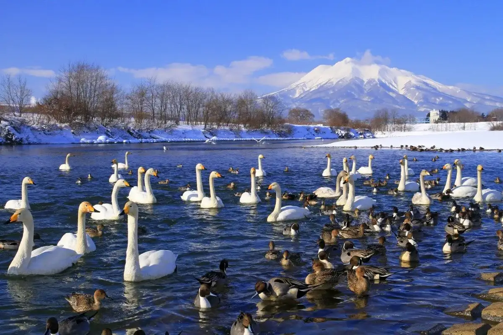
Stay
No bookable places to stay found in Fujisaki — nearest options in Hirosaki.
Dining
otomo
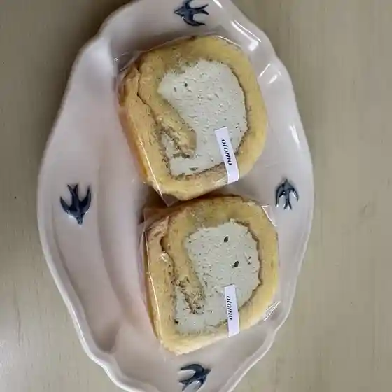
Otomo
ル・ボヌール
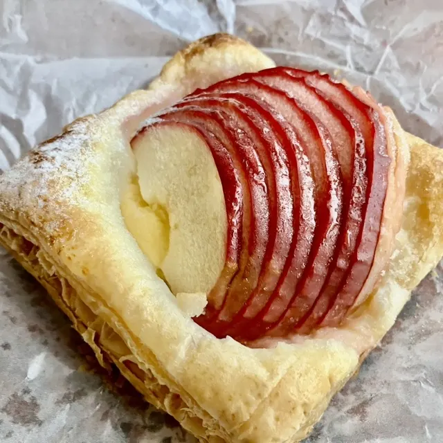
Ru Bonuuru
ふじさき食彩テラス
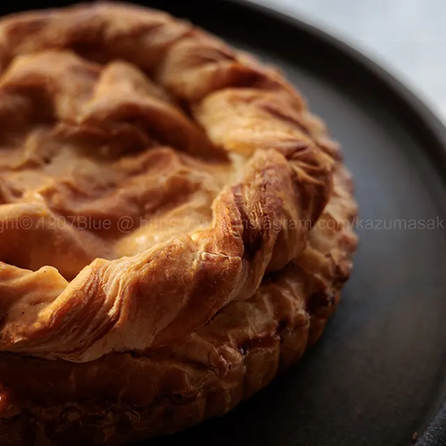
Fujisaki Shokusai Terasu
ゼルコーバ
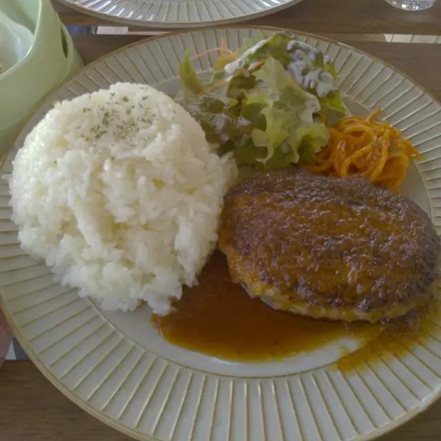
Zerukooba
home TABLE
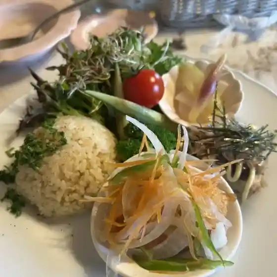
Home Table
きくち覚誠堂
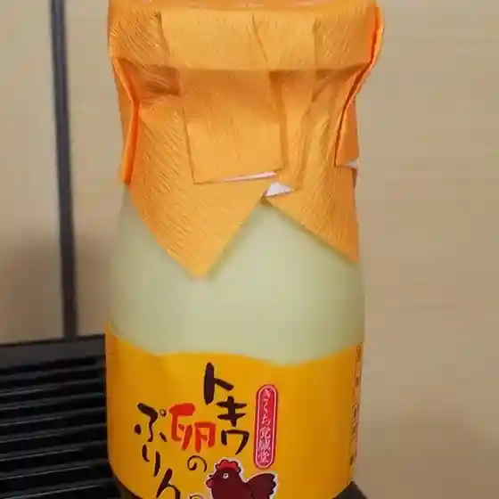
Kikuchi Kaku Makoto Dou
ランチ ファクトリー むら咲
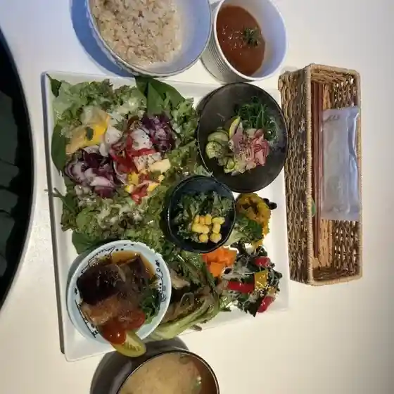
Ranchi Fakutorii Mura Saki
中華そば つしま
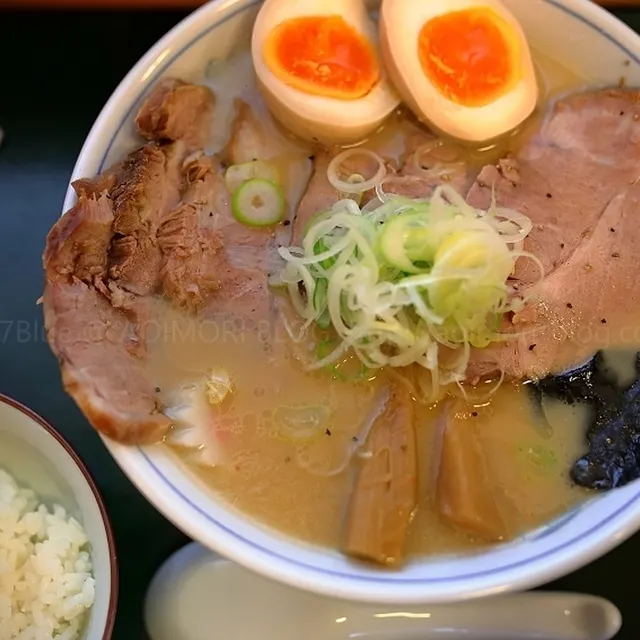
Chuuka Soba Tsushima
ダイニング輪
Dainingu Wa
佐嶋
Sa Shima
ＨＯＳＨＯ東華
H O S H O Touka
おやま食堂
Oyama Shokudou
ラグノオ イオン藤崎店
Ragunoo Ion Fujisaki Mise
まんぷく亭
Manpuku Tei
焼肉 五苑 青森藤崎店
Yakiniku Go En Aomori Fujisaki Mise
宝来軒
Hourai Ken
ささ膳和食処
Sasa Zen Washoku Tokoro
花と龍
Hana To Ryuu
やきとり鳥勢
Yakitori Tori Sei
Spicy & Creamy ふじさき食彩テラス店
Spicy & Creamy Fujisaki Shokusai Terasu Mise
ケイ酔処
Kei Sui Tokoro
麺屋 謝
Men Ya Sha
居酒屋えびす
Izakaya Ebisu
キッコーセイからあげ 藤崎店
Kikkoosei Karaage Fujisaki Mise
Sights
Fujisaki Swan Plaza
Riverbank spot on the Hirakawa River for watching wintering swans with snow-capped Mt. Iwaki behind.
RINGOCA Fujisaki Industry and Culture Center
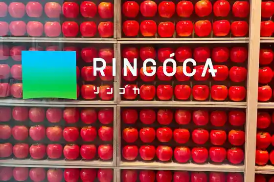
Apple-themed center in a former high school campus that once had Japan's only "apple department".
Karaito Gozen Historic Park
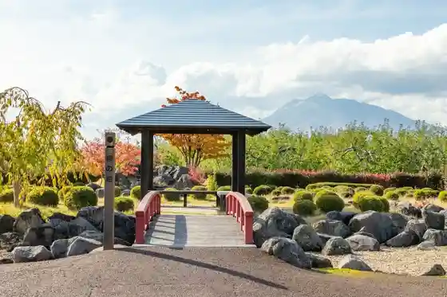
Park opened in 1994 among apple orchards, telling the Kamakura-era legend of Karaito Gozen, with views of Mt. Iwaki.
Fujisaki Shokusai Terrace
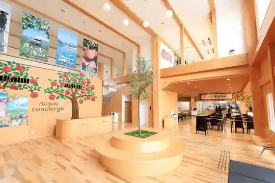
Farm market on Route 7 selling seasonal vegetables, fruit, rice and eggs from local farmers.
Resort Shirakami
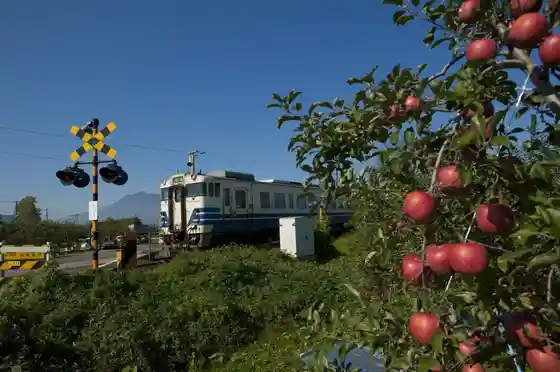
"Resort Shirakami" is a popular train with grand view of the Sea of Japan, running from Hirosaki, Aomori along the Gono Line to Akita.
Fujisaki Town Ground
Sports complex with an all-weather indoor artificial-turf field and outdoor athletics and multipurpose grounds.
Old Yew Tree of Tokuge (Onko no Ki)
Japanese yew over 500 years old by the torii of Tokuge Hachimangu, the oldest giant tree in Fujisaki.
Apple-Shaped Tree
Sawara cypress pruned into an apple shape by a local apple farmer, beside Route 339.
Kashima Shrine
Shrine tied to the wisteria legend that gave Fujisaki its name.
Fuji no Sato
Farm market next to the Fujisaki gas station on Route 7, in the birthplace of the Fuji apple.